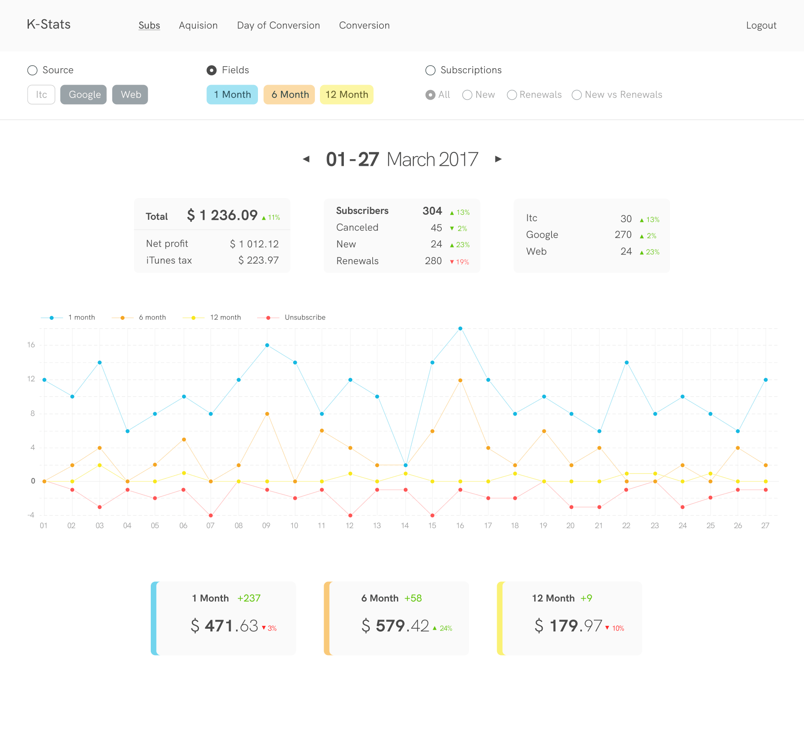

Client / User:
Chief Product Manager
Domain:
Infographics
Description:
A dashboard for an existing product. Designed to analyze financial progress, in particular for analytics of subscriptions
Objectives:
Based on the provided template, make a visually pleasing layout with an understandable structure and responsive game interface
Features:
Filters, charts, counters, calendar
Design:
Initial development of logic on paper
Screens:
Single screen